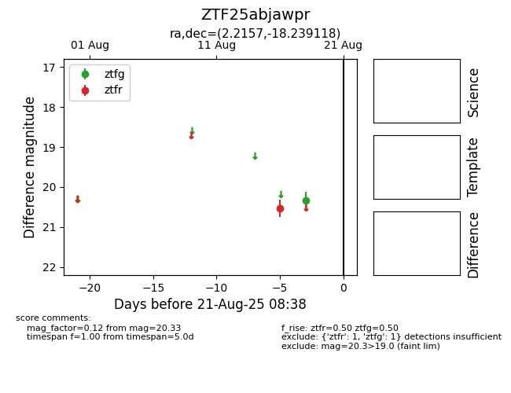

Target ZTF25abjawpr at 2025-08-21 08:38, see:
FINK: fink-portal.org/ZTF25abjawpr
Lasair: lasair-ztf.lsst.ac.uk/objects/ZTF25abjawpr
ALeRCE: alerce.online/object/ZTF25abjawpr
alt names
ZTF25abjawpr (ztf,alerce)
coordinates:
equatorial (ra, dec) = (2.2157,-18.23912)
galactic (l, b) = (72.9078,-76.76664)
photometry
last ztfg=20.33, ztfr=20.53
1 ztfg, 1 ztfr detections
